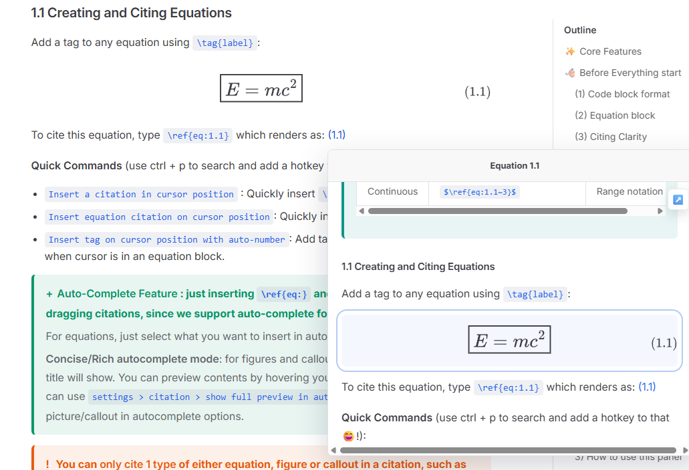

强大、便捷且优雅的学术引用工具
感谢 1.7k 下载😄!
🚀 快速入门：请查阅 快速入门教程，了解基本规则、语法与核心操作。只需不到 5 分钟，即可顺畅上手。
✨ 完整功能与更新记录：详见 更新日志。
📹 视频教程：如果本插件下载量达到 5000 次或仓库获得 50 个 Star，将会录制视频教程。
📱 平台支持：本插件已在 Windows、Linux、Mac 和 Android 上完成测试（某些功能在移动端可能受限）。
🛠️ 安装方式
-
您可通过社区插件安装此插件（
设置>第三方插件>浏览，搜索equation-citator）。 -
或从最新 Release 页面下载
main.js、manifest.json和style.css，放置于 Obsidian 仓库的.obsidian/plugins/equation-citator文件夹中。
👋🏻 适用场景
以下情况下，本插件会非常有用：
- 在 Obsidian 中撰写学术笔记，需要高效管理大量公式、图表，并支持自动编号与交叉引用
- 在 Markdown 中起草论文或技术文档，需要 LaTeX 风格的引用与精确编号
- 在笔记中推导公式，需要在同一文件或跨文件中反复引用这些公式
- 在学校或大学笔记中使用 Obsidian，希望快速跳转到被引用内容而无需反复滚动
- 笔记中包含图片、表格或定理类内容，需要系统化地管理引用与编号
以下情况不适合使用本插件：
- 引用 PDF 文件中的公式或内容（本插件不识别或处理 PDF 文件）
- 管理文献引用（请使用专用的文献管理插件）
- 多人实时协作编辑并自动同步公式编号
- 处理图片文件或扫描文档中的公式
✨ 功能介绍
1. ⚡ 按标题层级自动编号公式与图片
一键自动编号，支持：
- 全部公式 / 仅含标签的公式
- 全部图片 / 仅含标签的图片
- 自动编号后自动更新引用编号——在任意位置增删公式或图片，无需担心编号错乱或引用失效
- 右键重命名标签，所有对应引用将自动同步更新

2. 🖼️ 引用公式、图片、表格与定理

- 使用
\ref{eq:tag}语法引用公式，支持完整的自动补全 - 在图片语法中添加
fig:字段，并使用\ref{fig:tag}引用图片 - 通过 Callout 引用语法引用表格与定理，支持完全自定义的前缀配置
- 支持 Excalidraw 图片与 Markdown 章节预览
- 完整支持多项引用 & 连续引用 & 跨文件引用
3. 🖥️ 公式管理面板——浏览、跳转与拖拽引用
- 从管理面板中拖拽 公式、图片或 Callout 至编辑器，快速插入引用
- 筛选与搜索：可按"带方框公式"或"含标签公式"进行过滤
- 拖拽引用支持全类型与跨文件引用
- 在面板或编辑器弹窗中右键复制公式
- 从弹窗或管理面板中直接跳转至公式、图片或 Callout 所在位置

4. 📜 PDF 导出与网站文档支持
- 运行命令
Make markdown copy to export PDF，生成格式正确、可直接用于 PDF 导出的 Markdown 文件。
- 正确的引用与参考编号，支持可配置的引用颜色
- 支持图片标题/描述中的 Markdown 语法
- 您可以使用此功能构建带有实时引用功能的个人网站。
- 指定一个
网站笔记导出文件夹来构建您的文档。 - 您可以同步单个文件、文件夹或整个仓库到目标文件夹，引用元数据将被保留，以便在网站上渲染预览。

🛒 与其他插件的兼容性
以下常用数学类插件已通过与 Equation Citator 的兼容性测试，可放心搭配使用。
- Excalidraw — v1.3.3 后支持在图片引用预览中显示 Excalidraw 图形；像普通图片一样添加
fig字段即可引用。 - Typst Mate — 支持 Typst 风格自动编号；在
设置 > Categorical > Others > 启用 Typst 模式中开启。 - Latex Suite — 与本插件无缝配合，强烈推荐用于快速书写长而复杂的公式。
- Completr — 提供更好的 LaTeX 语法自动补全。
- Quick Latex — 提供括号自动放大等功能。
- Better math in callouts & blockquotes — 用于在 Callout 中获得更好的数学公式渲染效果。
- No More Flickering Inline Math
🚨 免责声明
本插件会对 Obsidian 仓库中的文件进行编辑和更新。
尽管本插件已在多个版本上经过充分测试，并在我自己的仓库中每日使用数月而未出现数据丢失，但仍可能存在未知 Bug，尤其是在引入新功能时。
为保护您的数据，强烈建议在使用本插件前启用 Obsidian 的"文件恢复"核心插件，或定期进行手动备份。
虽然我无法对因 Bug 或意外行为导致的数据丢失承担责任，但我会认真对待每一份反馈，并尽快调查和修复导致数据丢失的严重问题。
🐛 问题反馈
如遇到 Bug，请在 Issue 页面提供以下信息：
- Bug 的描述及复现步骤。
- 触发问题的相关 Markdown 文本。
- 在设置中启用调试模式，并提供控制台日志（在 Obsidian 中按
Ctrl + Shift + I）。
如有功能建议或使用疑问，也欢迎在 Issue 页面留言。
由于本插件采用缓存机制以提升性能，轻微的延迟或未能即时更新属于正常的缓存行为。请等待几秒钟，或重新打开文件、重启 Obsidian，确认问题并非由缓存延迟引起。
💖 支持与协作
本插件由我作为业余爱好开发，也用于我的日常工作，对所有人完全免费。
- 💖 如果有人能帮助我维护本插件，我将非常感谢（因为我在学习期间时间有限）。
欢迎贡献者与维护者加入： 您可以通过 Fork 本仓库并提交 PR 来参与贡献：
- 提交 PR 前请务必仔细测试您的代码！
- 将您的改动记录添加到
CHANGELOG.md中。（若未计划新的小版本，请使用下一个补丁版本号。）- 合并前有 CI 检查，请确保您的代码通过所有检查。
提交 PR 时，请将代码提交到
dev-latest分支。这是最新的开发分支，我会始终将我的开发分支同步至此，以避免潜在的合并冲突。
感谢 @azyarashi 对本插件的协作与重要改进，也感谢所有提出宝贵建议和功能需求的用户。
如果本插件对您有所帮助，欢迎在此处赞助我 ☕️：